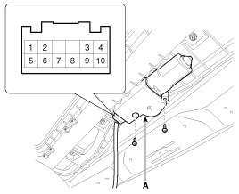
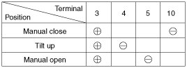
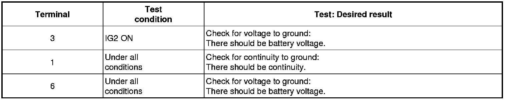
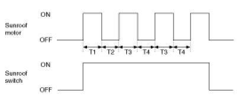

Repair Procedures
Inspection
1. Disconnect the negative (-) battery terminal.
2. Remove the roof trim.
3. Disconnect the sunroof motor (A) connector.

4. Ground the terminals as below table, and check that the sunroof unit operates.
NOTE:
- When inspecting the sunroof motor operation, sunroof motor and roller blind motor always should be connected.

5. Make these input tests at the connector. If any test indicates a problem, find and correct the cause, then recheck the system. If all the input tests prove OK, the sunroof motor must be faulty; replace it.

Resetting The Sunroof
Whenever the vehicle battery is disconnected or discharged, or you use the emergency handle to operate the sunroof, you have to reset your sunroof system as follows :
1. Turn the ignition key to the ON position and then close the sunroof completely.
2. Release the sunroof control lever.
3. Press and hold the CLOSE button for more than 10 seconds until the sunroof closed and it has moved slightly.
4. Release the sunroof control lever.
5. Press and hold the CLOSE button once again within 5 seconds until the sunroof do as follows;
A. Tilt -> Slide Open -> Slide Close
Then release the lever.
6. Reset procedure of panorama system is finished.
Protecting Motor From Overheating
In order to protect the sunroof motor from overheating from continuous motor operation, the sunroof ECU controls the Run-time and Cool-time of the motor as follows:
1. The sunroof ECU detects the Run- time of motor
2. Motor can be operated continuously for the 1st run-time (120 ± 10sec.).
3. The continuous operation of motor stops after the 1st Run-time (120 ± 10sec.).
4. Then Motor is not operated for the 1st Cool-time (18 ± 2sec.).
5. Motor is operated for the 2nd Run-time (10 ± 2sec.) at the continued motor operation after 1st Cool-time (18 ± 2sec.)
6. The continuous operation of motor stops operating after the 2nd Run-time (10 ± 2sec.)
7. Motor is not operated for the 2nd Cool-time (18 ± 2sec.).
8. Motor repeats the 2nd run-time and 2nd cool-time at the continued motor operation.
A. In case that motor is not operated continuously, the run-time is increased.
B. The Run-Time of motor is initialized to "0" if the battery or fuse is reconnected after being disconnected, discharged or blown.

T1 : 120 ± 10 sec., T2 : 18 ± 2 sec.,
T3 : 10 ± 2 sec., T4 : 18 ± 2 sec.